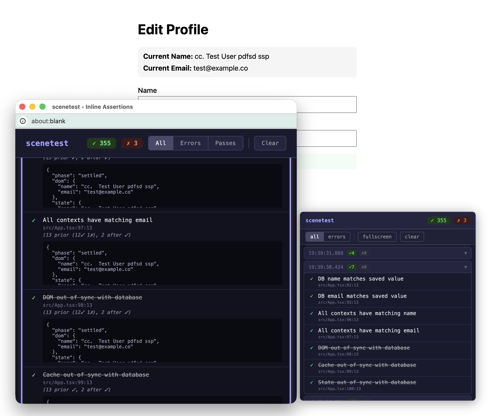

Scenetest
Local-First testing framework for Vite apps that helps you evaluate your product and your mental model – not your tests.
It's 2026; we builds app differently now. Component state, Query cache, Zustand store, Tanstack/DB, Electric SQL, DuckDB in WASM with React bindings... the Local First possibilities are endless, and they're helping us build buttery smooth, responsive UIs.
Test tooling should keep up.
Most frameworks rely on a headless browser clicking around our app, inputting inputs into inputs and clicking clickers and expecting to see certain expectations. If we're being very thorough we might check the database directly to be sure something updated (for realsies).
The DOM and the Database are good book-ends to compare, but if the main data store in your app is a local DB or cache, it feels like you're not really testing your app until you're able to make assertions about how your local state compares.
* * *
This is how Scenetest came about. We were looking for tests that would:
- Evaluate data we take from inside the React component lifecycle: in onSettled callbacks, in effects, hooks.
- Compare it to what we expect to find in the database or other privileged resources.
- Write both with full type safety, intellisense, etc., so your tests work with your types.
Apply this pattern to a testing framework, and we get a powerful tool for testing our expectations about nearly every layer of an application in one place.
// in your UI component
cost post = usePost(id)
const form = usePostForm(post)
// useAssert works like useEffect or useMemo
useAssert(
() => ({
title: 'Server item should match local',
// passing data from react-land to the server fn
withData: () => postsCollection.get(id),
serverFn: async (server, data) => {
const post = await server.getPosts(app.id)
if (!post) failed('title is empty')
should('titles match', post.title === app.title)
},
// skip when submitting, run when only finished
enabled: !form.isSubmitting,
}),
[form.isSubmitting, post.title]
)Scenes and Inline Assertions
Scenes are small user journeys, or the sort of atomic units of a user flow you want to test.
e.g. scenetest/profile-update.scene.ts: Log in, navigate to settings, change your username,
submit the form, see the success message. Scenes are about orchestration – driving the
browser through a sequence of interactions, and plenty of tools do this just fine,
except to add that in theory, writing a sene shouldn't require technical knowledge for how the
features are implemented.
// in scenetest/profile-update.scene.ts
scene('User updates their profile', async ([user]) => {
await user.goto('/profile')
await user.get('label[name=Name]').cousin('input').fill('New Name')
await user.get('button', { name: 'Save' })
.disabled(false)
.then(button => button.click())
await user.read('success!')
// That's it. All the assertions fired automatically.
})
Inline Assertions are test statements that live inside your application
code – in your components, hooks, and callbacks. They validate your mental model: “at this point in the code / React lifecycle,
this data should be in this state.” Engineers write them to encode their understanding of how and why this works, and to alert
future generations if they are ever running afoul of their ancient wisdom.
Use should or failed, or assertions that run on the server assert and useAssert.
import { should, failed, assert } from 'scenetest'
export function ProfileForm({ userId }) {
const { data: profile } = useProfile(userId)
// Runs every render, with the actual value, at the actual moment
should('Profile available without loading state', profile !== undefined)
// For special cases, an extra check
if (!profile) assert({
title: 'no profile returned means no profile exists',
serverFn: async (server) => {
if (await server.getProfile(userId)) failed('profile DOES exist!')
},
})
return !profile ? <CreateProfileForm />
: <EditProfileForm profile={profile} />
}Moving Assertions into the application code means they're type-safe out of the box, they run passively even as you just click around your. (In production, the Vite plugin strips them out entirely. Zero runtime cost. But in dev and test mode, these assertions keep reporting to the collector.)
And it means you never again have to apologise
to your code base for going into application code and writing
window.__profileStore = localDb.profileStore to expose items to the headless browser.

Multi-context comparisons
We use Playwright in our work and love it, because it allows us to do these multi-context assertions. But look at what we have to do to access the profileStore... now that we have gone into the App code and done the "assign a bunch of things to the window object to help exfiltrate it for the test runner" step mentioned above, we are now able to do this kind of “Reverse Server-Action” to get the data back out where we can compare it.
// ❌ "reverse server action" approach
const localDeck = await page.evaluate((lang) => {
// 🙅❌💀🤧
const profileStore = window.__profileStore
return profileStore?.getDeck(lang)
}, TEST_LANG)
const { data: dbDeck } = await getDeck(TEST_LANG, TEST_USER_UID)
expect(dbDeck).toBeTruthy()
expect({
cards: dbDeck.cards,
updated_string: dbDeck.updated_string,
}).toMatch({
cards: localDeck.cards,
updated_string: localDeck.updated_string,
})
I love the multi-context assertion capabilities here, but this approach to getting data
from the client feels like we are breaking into its home in the middle of the night and
stuffing it in a bag. Let's see if it gets a little nicer when
we write it using the assert function in the onSettled callback
after the mutation we're trying to test.
// ✅ server assertion triggered after a mutation
onSettled: (data) => {
assert({
title: 'New deck should initialise the same',
withData: () => {
data,
localDb: localDb.profileStore.getDeck(data.lang)
},
serverFn: async (server, data) => {
const newDeck = await server.getDeck(data.data.userId, data.data.lang)
if (!newDeck) failed('new deck is not real / persisted')
should(
'primary fields should match',
match(
[localDeck.cards, dbDeck.cards],
[localDeck.updated_string, dbDeck.updated_string]
)
)
},
})
}
For me, this feels a lot more natural. The engineer who wrote this has waited until the
exact moment when we decide the data should all be in sync, and then run the assertion
passing in all the client data it needs. What's so unwieldy about the prior version is that
we are sending the function from the server to the browser via the headless browser manager,
but we're not able to get it in to the app context, so we're just pulling from the
window object, and we're able to get it to produce data and we can return that
data across the bridge back to the test server. This clearly works but it is so riddled with
compromises that it feels like a more natural way is long overdue.
And look what it does to the applicability of our test code. This second example will work
after anyone creates a new deck at any time. Whenever this form or mutation is used,
the assertion will run. Unlike the reverse-server-action which is orchestrated by the test
suite and only knows how to compare toe getDeck(TEST_LANG, TEST_USER_UID).
And in any other tests that modify decks you'll have to either a) write duplicates of the same assertions in new places, or b) create helper functions that DRY this testing logic – additional abstractions, additional things that can pass or fail because you built the abstraction imperfectly, opportunities to miss the true nature of whether your app has broken.
Scenetest avoids this repetitiveness without the abstraction – by putting the assertions in with the component or hook code in the React app, exactly where it always should have been.
Scenetest is in early sideproject dev. Please check it out on GH or find me on bsky (or tw) and let me know what you think. — M